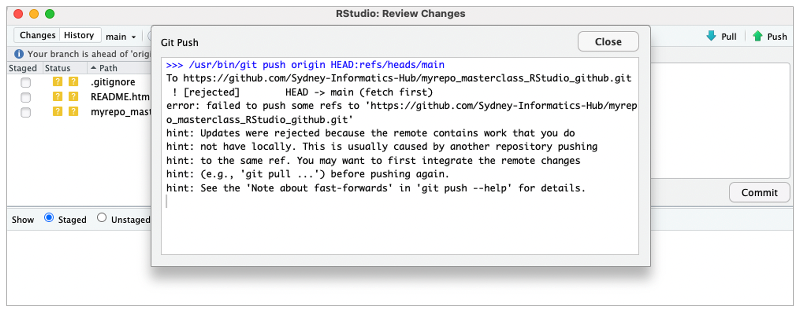
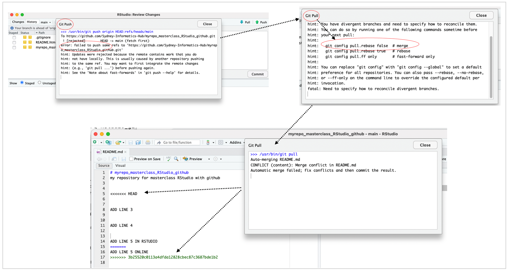

Conflict in git and how does RStudio assist
Questions
- What is a conflict in git?
What are conflicts when working in git
Conflicts can occur for various reasons:
- When two or more users make changes to the same file or files simultaneously, or
- When a user merges branches or commits that have diverged
- When Git detects a conflict, it stops the merge process and marks the affected file(s) with conflict markers that indicate the conflicting changes.
Simulating a conflict for a user
Step 1
- Make some text changes in your Readme.md file in RStudio
- Stage (add), commit and push as before
- Are the changes reflected in the online repository?
Step 2
- Go to the online repository and edit the Readme.md file (add/remove some lines) , commit the changes.
Step 3
- Get back to your RStudio and make additional changes and try to stage (add), commit and push them
- Do you get a conflict?
 - Why do think this happened?
A good workflow when working with git (either by yourself or in collaboration)-
Pull -> Edit -> Add -> Pull -> Commit -> Push
Resolving the conflict

Key points
- RStudio makes it easy to indetify and resolve conflicts
All materials copyright Sydney Informatics Hub, University of Sydney